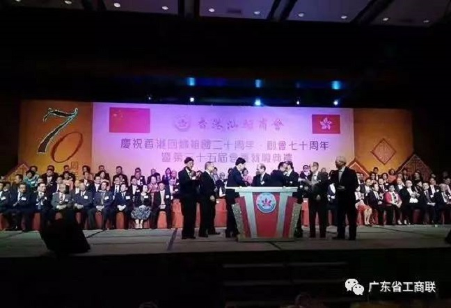

广东省广州市天河区88号
400-123-4567
+86-123-4567
admin@baidu.com
570000
卢小周出席香港汕头商会庆祝香港回归祖国20周年
来源：点击：时间：2017-05-23 15:17

5月8日，香港汕头商会在香港会议展览中心举行庆祝香港回归祖国20周年、创会70周年暨第35届会董就职典礼。香港特区政府政务司司长张建宗、中央政府驻港联络办副主任林武、中华全国归国华侨联合会副主席陈有庆等主礼嘉宾，潮汕四市领导代表以及香港各界嘉宾和代表近1000人出席典礼。省工商联副主席卢小周应邀出席活动并致送纪念品。
张建宗致辞时表示，香港汕头商会秉持爱国爱港宗旨，全力支持特区政府依法施政，对维持香港繁荣稳定和社会发展贡献良多。重视青年发展工作，举办各类交流活动开阔年轻一代的视野，让他们更深入认识国家和家乡，增加归属感。
香港汕头商会会长林镇洪致辞时表示，将带领新一届会董与时俱进，与国家“一带一路”大战略紧密结合，充分利用香港国际金融中心和“21世纪海上丝绸之路”重要节点，以及专业服务管理方面的经验和优势，在“一带一路”战略建设中发挥突出作用。他指出，商会将继续致力推动区域经济合作，充当促进香港与内地、以及东亚地区经济融合的桥梁纽带作用。
香港汕头商会创立于一九四六年，迄今已有七十年历史，宗旨是促进在港潮籍乡亲及工商团体团结一致，关心家乡建设和发展业务上的合作。目前会员逾千，来自各行各业，是香港具有一定代表性和影响力的团体。该会始终坚持爱国爱港，坚决维护《基本法》和一国两制方针，支持特区政府依法施政，为香港的持续繁荣稳定做出了积极贡献。